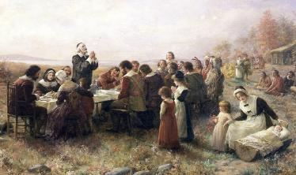

| Texas Branch National Society Sons and Daughters of the Pilgrims |

| The Objects of the Society |
1. To perpetuate the memory and to foster and
promote the principles and the virtues of the
Pilgrims.
2. To commemorate publicly, at stated times,
principle events in the history of the Pilgrims
and to erect durable memorials of historic
men, women and events.
3. To encourage the study and research of
Pilgrim history, especially as related to the
foundation of civil government and the
principles of religious freedom.
4. To foster and establish such departments of
study and organization as shall seem best
to promote social rights, civic virtue,
industrial freedom, political equality, the
supremacy of just laws, the value and
sacredness of the ballot, the purity of the
home, temperate and Godly living, and the
dependence of individuals, communities,
states and nations on the guidance of
Almighty God, as taught by the Pilgrims.
promote the principles and the virtues of the
Pilgrims.
2. To commemorate publicly, at stated times,
principle events in the history of the Pilgrims
and to erect durable memorials of historic
men, women and events.
3. To encourage the study and research of
Pilgrim history, especially as related to the
foundation of civil government and the
principles of religious freedom.
4. To foster and establish such departments of
study and organization as shall seem best
to promote social rights, civic virtue,
industrial freedom, political equality, the
supremacy of just laws, the value and
sacredness of the ballot, the purity of the
home, temperate and Godly living, and the
dependence of individuals, communities,
states and nations on the guidance of
Almighty God, as taught by the Pilgrims.
| Texas Branch Projects |
| The National Society and The Texas Branch - DSSDP support various President's Projects. We are currently supporting Patriot Paws Service Dogs, which provides service dogs to disabled American veterans and others. To learn more, please visit www.patriotpaws.org or call 972-772-3282. |
| Ours to Preserve. Ours to Transmit. Liberty in Union; Now and Forever" |

| Note from the National Website: QUALIFYING ANCESTORS: Double check the birthplace of the qualifying ancestor. The national bylaws state “.. the term “Pilgrim” shall denote any IMMIGRANT who settled before 1700 within the territory which became the forty-eight contiguous states…” An immigrant, by definition, migrates to another country; therefore the qualifying ancestor cannot have been born in the United States, i.e., must have been foreign born. |
| Additional Clarification: A "Pilgrim" ancestor need not be associated in any way with the Mayflower ship or the settlers at Plymouth. Your ancestor may have immigrated through another port or by other means, but must have settled in this country prior to 1700 to be classified a "Pilgrim" for the purposes of Membership in this Society. Please contact our Registrar with additional questions. |